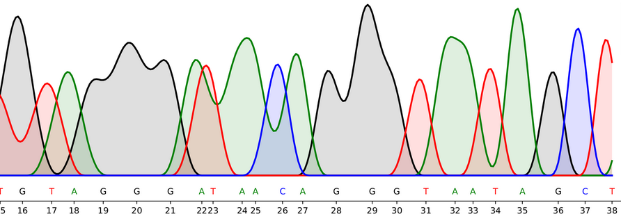

Syllabus
| Week | Date | Topic |
|---|---|---|
| 1 | April 2 | Introduction to the ubiquitous nature of counting in mathematics and the natural sciences. Hall of fame examples of counting. |
| 2 | April 9 | The N-dimensional sphere. |
| 3 | April 16 | Counting by Light. Counting the number of CO2 molecules in the atmostphere. |
| 4 | April 23 | Counting stars and galaxies. Counting proteins in cells using fluorescent proteins. |
| 5 | April 30 | Entropy as Counting. The great variational principle of thermodynamics. |
| 6 | May 7 | Boltzmann Distribution as a Counting Problem |
| 7 | May 14 | Counting prime numbers. Experimental mathematics, the prime-number theorem. |
| 8 | May 21 | Counting walks and trajectories. The statistical physics of trajectories. |
| 9 | May 28 | On counting and graphs. |
| 10 | June 4 | The Future of Counting. |